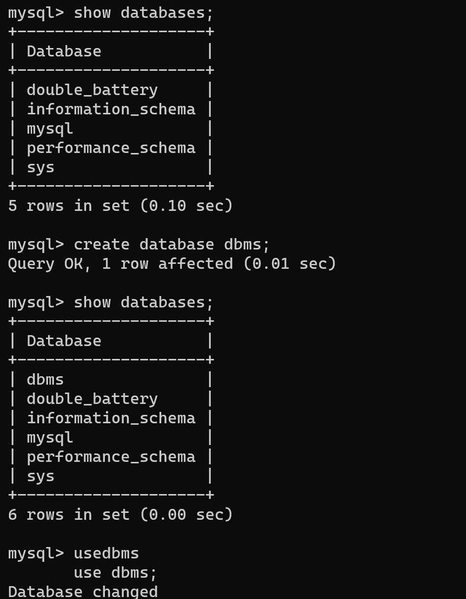

The SQL CREATE DATABASE statement is used to create a new SQL database. If you are creating your database on Linux or Unix, then database names are case-sensitive though SQL keywords are case-insensitive. If you are working on Windows then this restriction does not apply.
To list all databases on a MySQL server host.
MySQL Server can contain multiple databases and can serve multiple clients simultaneously. So, when a client connects to or opens a mysql command prompt, a database (from existing multiple databases) should be selected to run the SQL queries or operations. In this tutorial, we shall learn to select a database in MySQL, from multiple databases.
